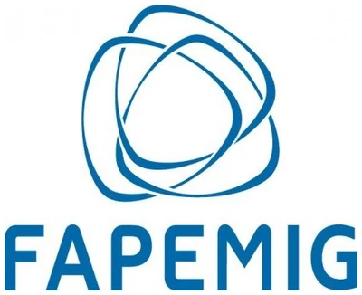

NETEX · Pesquisa · Iniciação Científica
Iniciação Científica
O NETEX recebe estudantes de graduação em projetos de pesquisa próprios, com bolsa ou como voluntários. Aqui ficam as vagas abertas e as regras de cada seleção.
Vaga aberta: bolsa de Iniciação Científica
Uma vaga para estudantes de graduação da UFU. Inscrições até 24 de setembro de 2026, às 23h59.
Transnacionalização da direita radical no espaço luso-brasileiro: o partido Chega e suas conexões com o Brasil

O projeto estuda o Chega, principal partido da direita radical portuguesa, a partir de suas conexões com o Brasil: a proximidade com o bolsonarismo, o desempenho entre os portugueses que vivem aqui e o endurecimento da legislação migratória que atinge a comunidade brasileira em Portugal. A pergunta de fundo é como um partido nativista corteja o eleitorado luso-brasileiro enquanto restringe a imigração vinda do Brasil.
A proposta será submetida ao Edital DIRPE nº 10/2026 da Universidade Federal de Uberlândia, que distribui bolsas de iniciação científica financiadas pela Fundação de Amparo à Pesquisa do Estado de Minas Gerais. Antes da submissão, o NETEX faz um processo seletivo para escolher o estudante que será indicado na proposta.
- Bolsa
- R$ 850,00 mensais, pela tabela da FAPEMIG
- Vigência
- Março de 2027 a fevereiro de 2028
- Carga horária
- 20 horas semanais
- Edital
- DIRPE nº 10/2026, PIBIC FAPEMIG/UFU
- Coordenação
- Prof. Dr. David Magalhães (IERI-UFU)
A bolsa depende da aprovação da proposta no edital, cujo resultado a UFU divulga até 30 de novembro de 2026. A seleção interna define quem será indicado, mas não garante a bolsa. Se o projeto for classificado sem ser contemplado, o estudante selecionado poderá atuar como voluntário no PIVIC, caso queira.
Pesquisa e dedicação ao NETEX
A bolsa não se resume ao projeto individual. Quem for selecionado passa a integrar o núcleo e distribui as vinte horas semanais entre quatro frentes, todas previstas no Plano de Trabalho da proposta.
Pesquisa própria
Montagem e codificação do corpus, leitura bibliográfica, relatórios e o artigo previsto no projeto.
Observatório
Monitoramento de fontes sobre Portugal e o Chega, que alimenta a própria pesquisa, e colaboração no boletim mensal do Observatório da Extrema Direita.
Divulgação científica
Textos curtos e material derivados da pesquisa para os canais do NETEX, além do vídeo de apresentação exigido pelo edital.
Formação
Sessões do GETEX, cujo Ciclo I começa em outubro de 2026, reuniões de orientação e seminários internos do núcleo.
O bolsista apresenta os resultados no Seminário de Pesquisa, Inovação e Pós-graduação da UFU e menciona o apoio da FAPEMIG e da UFU em toda publicação decorrente da pesquisa. Recomenda-se, sem obrigatoriedade, acompanhar as atividades do núcleo desde outubro de 2026, como período de ambientação.
Quem pode se candidatar
As exigências vêm do edital e do regulamento da FAPEMIG. Não cumprir qualquer uma delas impede a indicação.
Requisitos
- Estar matriculado em curso de graduação da UFU e ter cursado ao menos o segundo período.
- Ter formatura prevista para depois de fevereiro de 2028.
- Dispor de 20 horas semanais em horários fixos, sem sobreposição com aulas, estágio, monitoria, extensão ou trabalho.
- Não ter vínculo empregatício nem outra bolsa, salvo as de caráter assistencial ou de permanência.
- Não realizar outra iniciação científica, remunerada ou voluntária.
Compromissos
- Não aceitar indicação na proposta de outro coordenador neste edital.
- Ter ou abrir conta corrente no Banco do Brasil em nome próprio.
- Manter o Currículo Lattes atualizado e fazer o cadastro na plataforma EVEREST da FAPEMIG ainda durante a seleção.
- Aceitar, no Portal do Estudante, o convite enviado pelo sistema da UFU antes do prazo de submissão.
Processo seletivo
O calendário é curto porque a proposta precisa ser submetida até o fim de setembro, já com o estudante indicado.
Calendário
| Etapa | Data |
|---|---|
| Inscrições pelo formulário | até 24/09, 23h59 |
| Resultado | 28/09 |
| Aceite do convite no Portal do Estudante | 28 e 29/09 |
Critérios de avaliação
| Critério |
|---|
| Exercício analítico |
| Carta de intenção |
| Histórico escolar e trajetória acadêmica |
Os aprovados são classificados em ordem decrescente. O primeiro colocado é indicado na proposta, e os demais formam cadastro de reserva, podendo ser chamados em caso de desistência ou para vagas voluntárias no PIVIC.
Inscreva-se
Inscrições até 24 de setembro de 2026, às 23h59. Reúna o que segue antes de começar, porque o formulário não permite salvar e continuar depois.
- Histórico escolar extraído do Portal do Estudante, em PDF ou imagem.
- Link do Currículo Lattes, ou a indicação de que ele está em elaboração.
- Carta de intenção de até 400 palavras.
- Resposta a um exercício analítico de até 300 palavras, proposto no próprio formulário. Não se exige conhecimento prévio sobre Portugal.
O formulário abre em nova aba e pede login numa conta Google, exigência do próprio Google Forms para o envio do histórico. Os dados informados servem apenas a este processo seletivo, nos termos da Lei nº 13.709/2018. Dúvidas podem ser enviadas para netex.ufu@gmail.com.